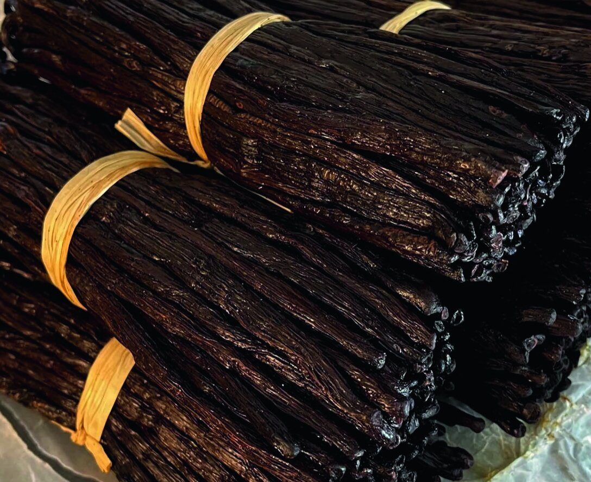
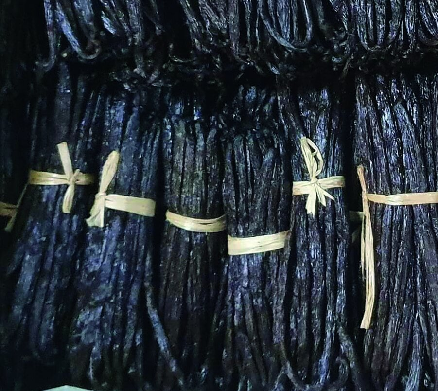
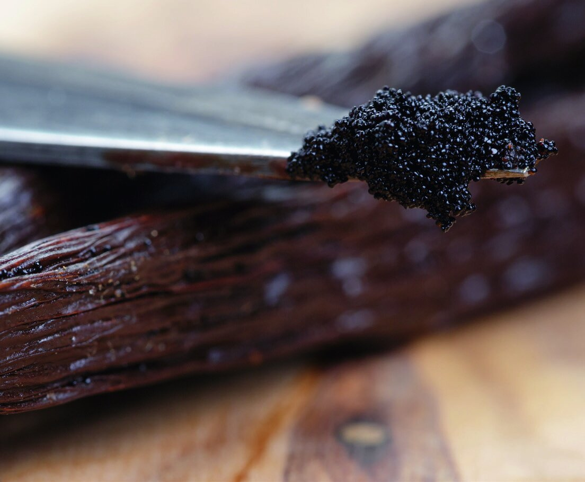
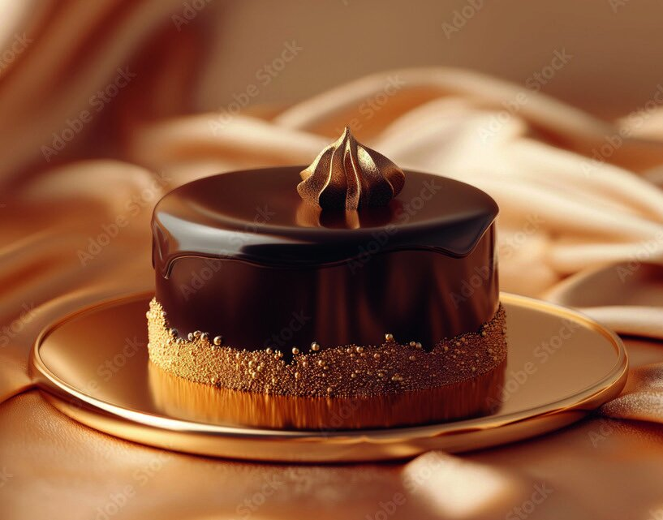
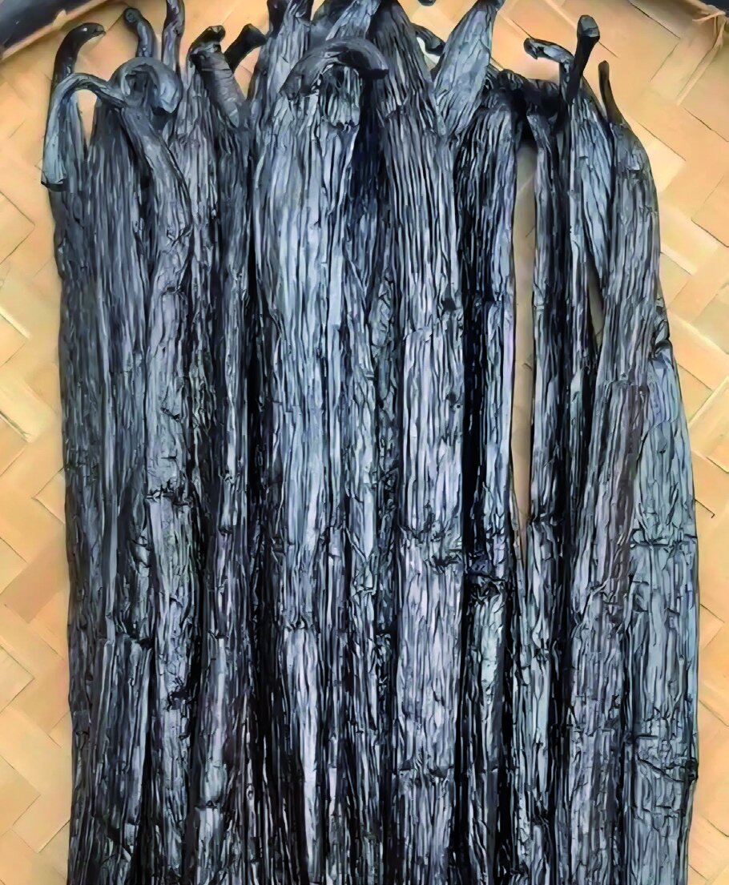

Quatre sélections d'exception, chacune récoltée à la main dans la région de la S.A.V.A et affinée selon un savoir-faire transmis de génération en génération.

Les gousses de vanille Bourbon TK sont des gousses de haute qualité, anciennement connues sous le nom de Bourbon. Elles sont souvent considérées comme parmi les meilleures gousses de vanille disponibles sur le marché en raison de leurs arômes et de leurs saveurs intenses et complexes.
Elles offrent un profil de saveur crémeuse, caramel, prune, cerise, vanillée et sucré, avec des notes de caramel ainsi qu'un arôme floral distinct. Affinées entre 25 et 30% d'humidité, plus sèches que la vanille Bourbon Gold, leurs teneurs en vanilline sont plus importantes et leurs notes finales plus vanillées.
Conditionnement conseillé : tube à essai en verre.
Demander un devisDécouvrez des gousses de vanille noir nacré intense, riches en huiles essentielles de vanille d'une qualité exceptionnelle. Dès le premier nez, cette vanille révèle un profil aromatique complexe, alliant des notes de figue, des accents subtils de fève Tonka, et une rondeur beurrée évoquant la noix de cajou.
Un véritable « coup de foudre » pour les connaisseurs exigeants, parfait pour sublimer des créations culinaires et sortir des sentiers battus — un final corsé, d'une profondeur rare.
Notes principales : cacaotée, fève Tonka, sauvage, beurrée, huileuse, intensément vanillée.
Notes de cœur : caramel, pointe balsamique, fruits secs (figues), fruits rouges (fraises, fruits des bois).
Pour les professionnels de la CHR, glaciers, pâtissiers et chocolatiers.
Demander un devis

Des gousses de vanille Bourbon superbes, un ensemble très gourmand, affiné plusieurs mois pour un résultat bluffant en pâtisserie. Notre différence Bourbon Gold : un très long affinage en malle de bois de notre vanille, et des gousses très charnues pour sublimer desserts, pâtisseries et plats préférés.
Notes cacao brut, florales, beurrées, figue — cultivées avec soin pour offrir un arôme et une saveur incomparables.
Notes principales : cacao brut, huileuse, vanillée, florale (rose, lys), légèrement acidulée.
Notes de cœur : beurrée, figue, pruneau.
Pour les professionnels de la CHR, glaciers, pâtissiers et chocolatiers.

Notes sous-bois, cuir, abricot, chocolat noir, fruits rouges cerisier. Des gousses de très grandes tailles, gourmandes, affinées plusieurs mois pour un résultat bluffant en pâtisserie.
Une vanille rare, la plus impressionnante visuellement, au nez puissant et « hors des sentiers battus », qui représente une partie infime de la récolte de Madagascar — environ 0,001%. Les gousses ont des dimensions bluffantes, elles vous surprendront absolument !
Notes principales : cerisier, confite, grasse.
Notes de cœur : caramel, vanillée, cuir, fruits rouges.
Idéale pour la vente en packaging souvenir.
Demander un devis
Nous commercialisons nos vanilles suivant votre besoin, au kilo ou en box de 2 à 30 kilos, pour les distributeurs et professionnels de la restauration. Nos gousses sont livrées sous vide d'air en box, avec conseils d'utilisation et de conservation.